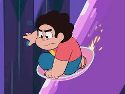

La temporada 5 es la última de la serie y se divide en varias partes.
Se resuelven muchos de los misterios y conflictos pendientes, incluida la amenaza de Homeworld y el destino de las Gemas de Cristal.
La temporada concluye con un enfoque en la resolución de conflictos personales y el crecimiento de los personajes.
Se revelan más detalles sobre el pasado de Rose Quartz y su relación con Steven
